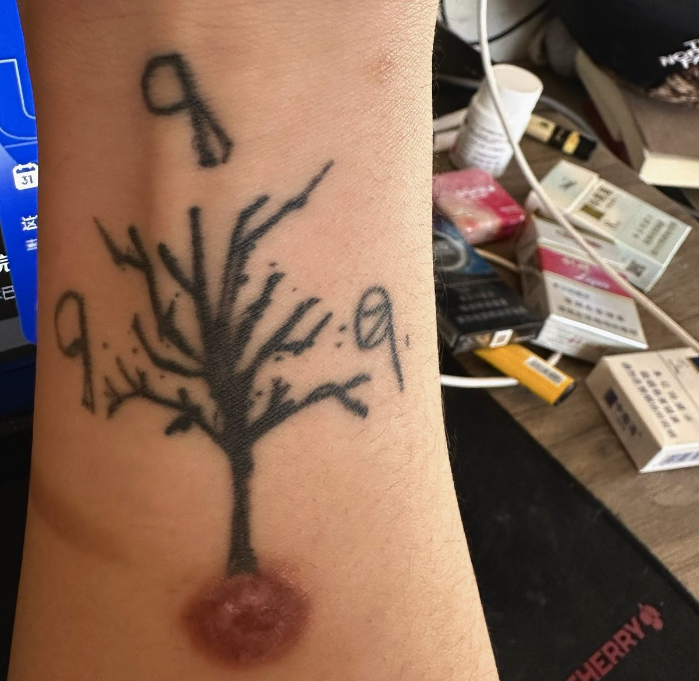

Jahseh
@godspeedyou50
其实这两个问题会令我思考很久很久，甚至会想吸一些东西好好想想，很深刻。
1.如果自残是在身上改花刀的话我没做过，但我有一个烫进脂肪层的烟疤。
在25年十月，在我自认为我已经成熟至极，
我的情智商超越了同龄人姑且只是时运不济罢了。
但我错了，我体会了六亲缘薄的滋味，我喝了很多很多很多很多的酒，我迷迷糊糊的假认这是我该经历的，我以为我不会很痛苦了，这对我不算什么，我把烟头狠狠的烫在我身上，我想找到清醒，所以我一直理解自残的人，我知道这是回到这个世界的最快手段。
除此之外的话我只有过在发病的时候不舍得伤害身边人时用烟灰缸砸自己的头。
